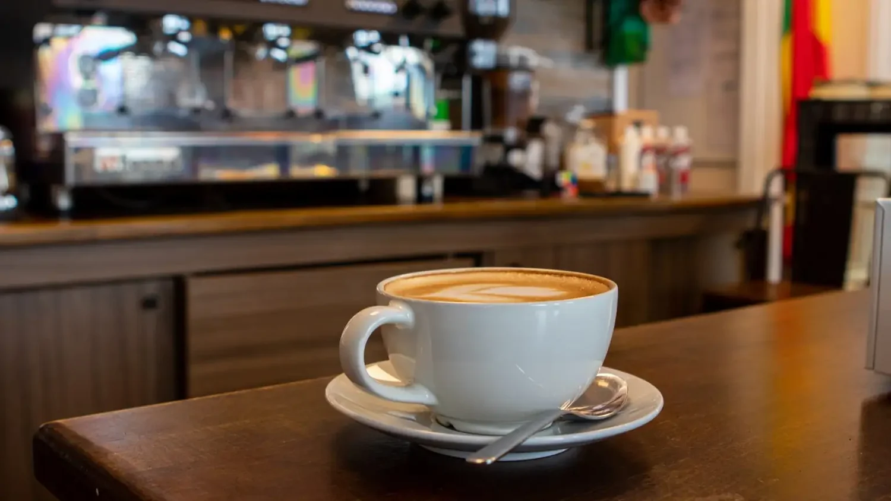
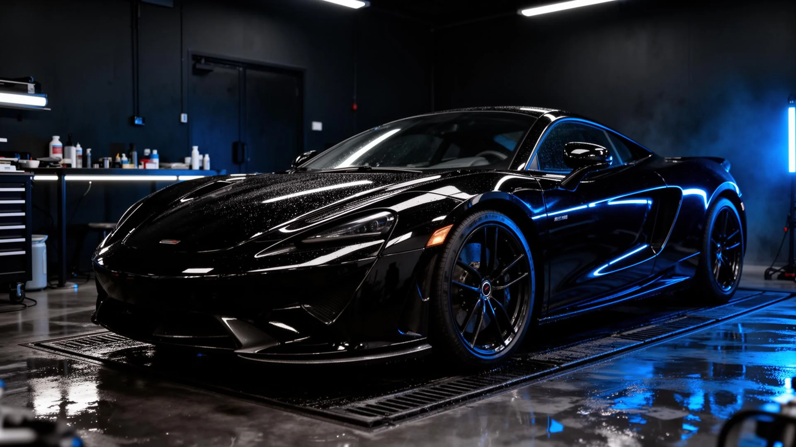
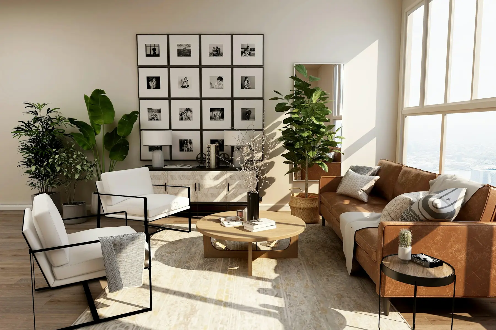

01
Лендинг
Одностраничный сайт для услуги, продукта, мероприятия или рекламного трафика.
- Структура и прототип
- Адаптивный дизайн
- Форма заявки
Сайты для малого бизнеса
Проектируем понятную структуру, современный дизайн и адаптивную верстку — без лишней сложности для клиента.
Новый сайт
Структура → дизайн → разработка → запуск
01 / Услуги
Не начинаем с красивой картинки. Сначала понимаем, что должен сделать посетитель и какая информация поможет ему принять решение.
Одностраничный сайт для услуги, продукта, мероприятия или рекламного трафика.
Сайт для бизнеса с услугами, преимуществами, кейсами, этапами работы и контактами.
Обновление устаревшего сайта: визуал, структура, мобильная версия и точки конверсии.
Почему Verto
Посетителю должно быть понятно, кто вы, что предлагаете, почему вам можно доверять и что делать дальше.
Разобрать вашу задачу ↗Убираем хаос и выстраиваем последовательный сценарий просмотра.
Кнопки, форма и смысловые блоки ведут посетителя к следующему шагу.
Интерфейс удобно работает на смартфоне, планшете и большом экране.
Чистый визуал помогает сосредоточиться на предложении, а не на эффектах.
02 / Избранные проекты
Разрабатываем сайты с продуманной структурой, выразительным дизайном и полноценной адаптацией под мобильные устройства.
Ниже — три демонстрационных проекта Verto Studio для разных направлений бизнеса.

MORROW COFFEE Тёплые утраТёплый одностраничный сайт для современной кофейни. Атмосферная визуальная подача, меню с ценами, информация о заведении, отзывы, адрес и контакты.
Передать атмосферу современной кофейни и быстро привести гостя к меню, адресу и контактам.
Тёплая шоколадная палитра, крупная фотография, понятная структура, карточки напитков и спокойные анимации.
Меню, карточки и CTA отдельно перестроены для планшетов и смартфонов.
Готовый демонстрационный сайт, показывающий подход Verto Studio к проектам для HoReCa.
Технологичный сайт премиальной детейлинг-студии. Тёмная визуальная система, выразительная автомобильная фотография, понятная презентация услуг и коммерческие призывы к действию.
Сформировать премиальное впечатление о студии и сделать выбор услуг понятным владельцу автомобиля.
Графитовая визуальная система, автомобильная фотография, каталог услуг, сравнение «до / после» и заметные точки записи.
Сетки услуг, галерея, сравнение и форма сохраняют удобный сценарий на мобильных экранах.
Готовый локальный демо-проект, показывающий возможности Verto Studio в автомобильной нише.

APEX DETAILING Точность
FORMA ESTATE Пространства,Архитектурный сайт агентства премиальной недвижимости Москвы. Молочно-бежевая палитра, editorial-композиция, каталог объектов, работающий фильтр и форма персонального подбора.
Создать сайт, который передаёт уровень элитной недвижимости и помогает перейти от просмотра к персональному подбору.
Молочно-бежевая палитра, архитектурная типографика, каталог с фильтром и интерактивная форма подбора.
Каталог, фильтры, editorial-галерея и форма спроектированы как отдельный мобильный сценарий.
Готовый демонстрационный сайт, показывающий возможности Verto Studio для премиального рынка недвижимости.
Ваш проект / Следующий
Расскажите о проекте — Verto Studio предложит структуру, визуальное направление и формат разработки под вашу задачу.
Обсудить проект03 / Процесс
Фиксируем этапы заранее, чтобы было понятно, что происходит сейчас и какой результат будет следующим.
Разбираем бизнес, аудиторию, цель сайта и необходимые материалы.
Определяем порядок блоков и логику, по которой посетитель идёт к заявке.
Собираем интерфейс, адаптируем его под экраны и добавляем интерактив.
Проверяем ссылки, форму, мобильную версию и готовим проект к публикации.
04 / Вопросы
Коротко о том, что чаще всего важно узнать до старта.
Кратко рассказать о бизнесе, услугах, клиентах и цели сайта. Если есть логотип, фотографии или примеры понравившихся сайтов — тоже пригодятся.
Да. Макет и верстка сразу проектируются под большие экраны, планшеты и смартфоны.
Да. Код организован по понятным секциям, поэтому контент и отдельные блоки можно обновлять после запуска.
Проводим финальную проверку, подключаем нужную отправку заявок и размещаем сайт на выбранном хостинге.
05 / Контакты
Опишите задачу в нескольких предложениях. На первом этапе достаточно понять нишу, цель сайта и желаемый результат.
Первая консультация — бесплатно
Можно начать даже без готового ТЗ
Работаем с проектами удалённо